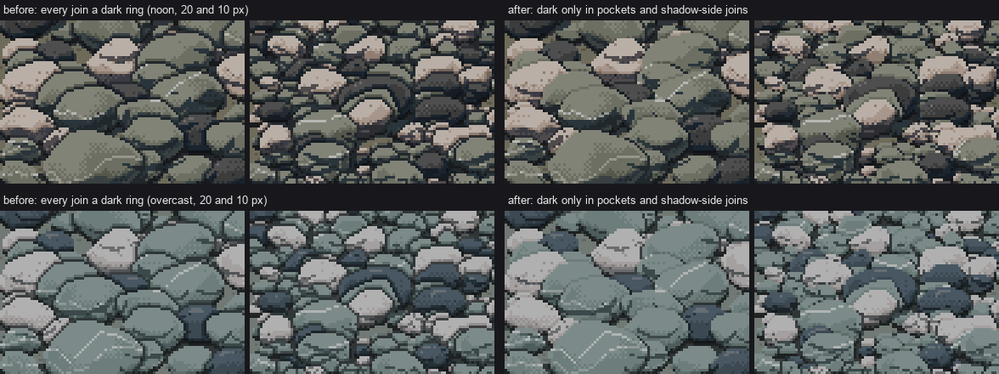
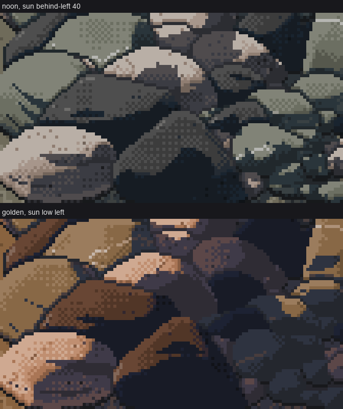

5. Darkness only in the pockets
← small stones · front page · next: the palette is the light →
When: two or more stones touch, overlap, or sit in gravel. That's every picture of cobbles.
The rule: dark goes only where light can't reach. That means under a stone, in a narrow gap between two stones, and at a join on the shadow side. It never goes as an outline drawn round a stone. Where two lit faces meet, the edge is found by a one-step value change alone.

Sheet cells at 20 and 10 px per stone, same seeds. Left: every join a dark ring, so the bar reads as leaded glass or a cobbled street. Right: dark only in the pockets.

The same at 8×. On the right the joins between lit faces are gone, found only by a one-step value change, while the pockets under and between stones stay black.
This is Ferrari's V19 pile: his boulders lap each other, and the black lives in the pockets where they meet, not along the lit edges. It was the single biggest tell in my work. The critic flagged it in rounds 4 and 5, and it was the last thing I fixed.
1. Paint back to front, and keep each stone's visible part
In scene.place, stones are sorted by their base row (farther = higher on screen = earlier). Each is painted by the stone painter and overwrites what's behind it. Keep the visible mask of each stone, because the join rules work on it:
order = sorted(range(len(stones)), key=lambda i: stones[i]['y'])
vis = {}
cover = np.zeros((cv.H, cv.W), bool)
for i in reversed(order): # nearest first
vis[i] = masks[i] & ~cover
cover |= masks[i]
2. The joins
For each nearer stone i and each farther stone j that it overlaps, look at j's pixels touching i's silhouette:
- Shadow-side join, or j already in shadow: those pixels drop to SH_DARK. That's a pocket.
- Lit against lit: j's pixel drops one step, and only if the two would otherwise be within a step of each other (so the edge is found). Otherwise it's left alone.
sun2 = np.array([sund[0], -sund[1]]) # screen: +y is toward the viewer (down)
for i in order:
di = None
for j in order:
if stones[j]['y'] >= stones[i]['y'] or not near(i, j, 2):
continue
if di is None:
di = ndi.binary_dilation(vis[i], CROSS)
ys_, xs_ = np.nonzero(vis[i])
cxi, cyi = xs_.mean(), ys_.mean()
yy_, xx_ = np.mgrid[0:cv.H, 0:cv.W]
ox_, oy_ = xx_ - cxi, yy_ - cyi
nrm = np.hypot(ox_, oy_) + 1e-6
facing_sun = (ox_ * sun2[0] + oy_ * sun2[1]) / nrm > 0.15
touch = vis[j] & di
if not touch.any():
continue
shadowy = touch & ((cv.step <= SH_LIGHT) | ~facing_sun)
cv.step[shadowy] = np.minimum(cv.step[shadowy], SH_DARK)
litj = touch & ~shadowy
nb = ndi.grey_dilation(np.where(vis[i], cv.step, -1), footprint=CROSS) # i's value next door
close = litj & (np.abs(nb - cv.step) <= 1)
cv.step[close] = np.maximum(cv.step[close] - 1, SH_LIGHT)
facing_sun is a crude test (the direction from i's centre compared with the sun's direction), but it was enough.
3. The ground between stones
On open gravel (scene.paint_ground_gravel), the darkness comes from two places only:
- the contact rows right under each stone's bottom;
- gaps: ground pixels close to two stones at once. The second-nearest distance transform finds them.
ds = [ndi.distance_transform_edt(~info['vis'][i]) for i in info['order']]
D = np.sort(np.stack(ds), 0)
gap = (D[1] <= gap_px) & ground # within 2.5 px of two different stones
deep = (D[1] <= gap_px * 0.6) & ground
base = np.where(gap, np.minimum(base, ordered(np.full((H, W), 0.5), (CONTACT, SH_DARK))), base)
base = np.where(deep, CONTACT, base)
for i in info['order']:
m = info['vis'][i]
below = shift(m & (edge_dist_down(m) == 0), 0, 1) & ground
base = np.where(below, CONTACT, base)
base = np.where(shift(below, 0, 1) & ground & ~below, np.minimum(base, SH_DARK), base)
In a packed bar (bar.pockets), a morphological closing of the stone mask finds the enclosed voids:
close = ndi.binary_closing(anyst, np.ones((3, 3), bool), iterations=1) & g
cv.step[close] = np.minimum(cv.step[close], SH_DARK)

nb061. The trap on open ground: my first "occlusion pockets" crowded every side of every stone, so each sat in a halo of dark checker. Against lit gravel, a stone's crown is found by value alone; no halo.
4. A neighbour's shadow lies at the contact
A stone nearer the sun casts its shadow onto its neighbour. If you just intersect the shadow footprint with the neighbour, you get flat dark bands across the middle of its face ("camo streaks", critic round 4). Two limits fix most of it:
- the shadow only reaches a few pixels from the caster (18% of the caster's size);
- it only climbs the receiver as high as the caster is tall, in proportion (
low_part).
if (cen[i] - cen[j]) @ sund > 0: # i sits sunward of j
ratio = stones[i]['D'] / stones[j]['D']
zj = low_part(masks[j], min(1.0, 0.6 * ratio))
r = max(2, int(0.18 * stones[i]['D']))
near_i = ndi.binary_dilation(masks[i], CROSS, iterations=r)
sh_j |= shads[i] & ~masks[i] & zj & near_i
...
cv.step[sel] = np.where(cur >= FL, SH_LIGHT, np.where(cur >= TURN, SH, SH_DARK))

nb075. Before both fixes: leaded glass everywhere, and neighbours' shadows as flat bands (noon). At golden hour (below), long shadows merge and the pile becomes a dark jumble.
Not solved: the shadow that remains is still a flat stepped shape. It doesn't wrap the receiving stone's form, and at 40 px it can still land as a dark hook mid-face (sheet A, 40 px column). Ferrari's cast shadows on rock are a checker of a shadow pair, and I'd try that next. At golden hour, each stone should keep a lit sliver on its sunward edge even when it's shaded, so the pile stays countable.
Check
Squint at the pile. If the dark reads as a network of lines, you've drawn outlines. If it reads as holes between stones, you've drawn pockets.